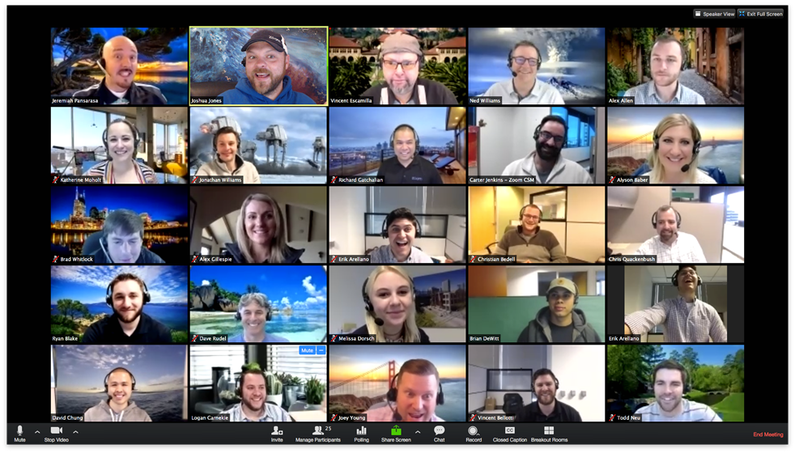

About ECM16
Since 1989, the Estuarine and Coastal Modeling Conference (ECM) has provided a venue for
commercial, academic, and government scientists and engineers from
around the world to present and discuss the latest results and
techniques in applied estuarine and coastal modeling, with ample opportunity for networking.
This year, we are excited to join forces with the Coastal Estuarine Research Foundation (CERF),
as the ECM16 conference will be held in November as part of the
26th CERF Biennial Conference!
The virtual format for CERF 2021 will certainly be different, but it creates the opportunity to reach a more expansive
group of scientists and students from around the world to address the science and management of coastal ecosystems and communities. We hope to see you there!

Visit CERF's Conference FAQ page for more information on registration, technology, programming, and terms and conditions.
Attendees may also submit papers to the ECM16 special issue of the Journal of Marine Science and Engineering (JMSE). See previous special issues.
 All attendees can enjoy 20% discount on Article Processing Charge (APC) in this Special Issue;
All attendees can enjoy 20% discount on Article Processing Charge (APC) in this Special Issue;
We will select two winners for ECM16 Best Paper Awards with 500 CHF (Swiss Francs) each , and one feature paper (free of charge) in JMSE. The winners will be announced in September 2022.
Registration
Registration is open and should be done online at CERF's registration webpage. If you are presenting, you will need to submit an abstract for the "Estuarine and Coastal Modeling" session and specify your choice of presentation type (oral or poster).
Key Dates
- May 5, 2021: Deadline for abstract submission
- June 21, 2021: Deadline for reduced registration fees
- July 31, 2021: Scientific program is finalized
- September 6, 2021: Presenters must confirm their participation and pre-register
- October 25, 2021: All registration fees DUE
- November 1-4 and 8-11, 2021: ECM16 Conference
- May 30, 2022: Deadline for submitting papers to JMSE
Fees
Abstracts
- Abstract Submission: $70
Conference Registration
- Before or on June 21, 2021 - Member $200, Non-Member $400,
Student Member $100, Student Non-Member $150 - After June 21, 2021 - Member $250, Non-Member $400,
Student Member $125, Student Non-Member $150
Topic Areas
Many topics areas in estuarine and coastal modeling can be discussed, including: Storm Response • Climate Change and Resilience • Ecosystems • Operational Forecasting • Coupled Systems • Numerical Techniques • Water Quality • Sediment Transport • Analysis and Visualization • Cloud Computing • Machine Learning • Regional Applications
CERF Program
Schedule-at-a-Glance
*ECM Session Schedule will be posted once available*
* Note: All times are listed in Eastern Time (ET)
Monday, November 1st, 2021
- 7:00 AM - 10:00 AM: Workshops
- 10:00 AM - 12:00 PM: Awards and Keynote
- 12:00 PM - 1:00 PM: Break and Mentoring Booth
- 1:00 PM - 2:30 PM: Oral Sessions
- 2:30 PM - 6:00 PM: Workshops
Tuesday, November 2nd, 2021
- 10:00 AM - 11:30 AM: Oral Sessions
- 11:30 AM - 1:00 PM: Break and Mentoring Booth
- 1:00 PM - 2:30 PM: Oral Sessions
- 2:30 PM - 4:30 PM: Posters
- 4:30 PM - 6:00 PM: Virtual Exhibit Hall
- 6:00 PM - 8:00 PM: Student Social
Wednesday, November 3rd, 2021
- 7:00 AM - 10:00 PM: Workshops
- 10:00 AM - 11:30 AM: Oral Sessions
- 11:30 AM - 1:00 PM: CERF Inclusion Event
- 1:00 PM - 2:30 PM: Plenary 1
- 2:30 PM - 6:00 PM: Workshops
- 6:00 PM - 8:00 PM: CERF Social
Thursday, November 4th, 2021
- 10:00 AM - 11:30 AM: Oral Sessions
- 11:30 AM - 1:00 PM: Break and Virtual Exhibit Hall
- 1:00 PM - 2:30 PM: Oral Sessions
- 2:30 PM - 4:30 PM: Posters & Film Festival (Concurrently)
- 4:30 PM - 6:00 PM: CERF Business Meeting
Monday, November 8th, 2021
- 8:00 AM - 10:00 AM: Workshops
- 10:00 AM - 11:30 AM: Plenary 2
- 11:30 AM - 1:00 PM: Break and Mentoring Booth
- 1:00 PM - 2:30 PM: Oral Sessions
- 2:30 PM - 6:00 PM: Design Competition & Workshops (Concurrently)
Tuesday, November 9th, 2021
- 8:00 AM - 10:00 AM: Workshops
- 10:00 AM - 11:30 AM: Oral Sessions
- 11:30 AM - 1:00 PM: Break and Vendor
- 1:00 PM - 2:30 PM: Oral Sessions
- 2:30 PM - 6:00 PM: Workshops
- 6:00 PM - 8:00 PM: Student Networking Event
Wednesday, November 10th, 2021
- 10:00 AM - 11:30 AM: Oral Sessions
- 11:30 AM - 1:30 PM: Break and Family & Career Panel
- 1:00 PM - 2:30 PM: Plenary 3
- 2:30 PM - 4:30 PM: Posters
- 4:30 PM - 6:30 PM: Affiliate Society Meetings
- 6:00 PM - 8:00 PM: Family Friendliness Social
Thursday, November 11th, 2021
- 10:00 AM - 11:30 AM: Oral Sessions
- 11:30 AM - 1:00 PM: Break
- 1:00 PM - 2:30 PM: Oral Sessions
- 2:30 PM - 4:30 PM: Close Out
Oral Sessions
Oral sessions are organized as 1.5-hour virtual session blocks with synchronous content. These blocks include 15-min "Anchor" and 5-min "Summary" talks and a 30-min, interactive discussion session featuring session speaker panelists!

Poster Sessions
Poster submissions will be available online throughout the conference. Attendees can interact with the presenters during asynchronous discussion forums and/or during a scheduled Poster Rountable.
Film Festival
Film Festival is a new CERF event showcasing short films made by CERF members! Enter your own work
and view other member-made films - a panel of judges will award the best film in each category.
Film submissions due September 1st, 2021.
More info »